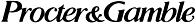

 Helps Kids with Diabetes
New York, NY; Sept. 2, 1998—In September, Procter & Gamble and its supporting retailers are enabling shoppers to join them in helping the Juvenile Diabetes Foundation (JDF) raise money to find a cure for diabetes and its complications. Through a national consumer promotion supporting the JDF Walk to Cure Diabetes, Procter & Gamble will contribute up to $300,000 to JDF and help raise even more for diabetes research. This will add to the more than $1.5 million Procter & Gamble and its supporting retailers have contributed to JDF since 1995. The Walk to Cure Diabetes promotion includes the following:
According to Gary Bores, JDF National Manager of Marketing and Promotions, “Because of the Procter & Gamble promotion, people everywhere can conveniently support JDF simply by buying a paper sneaker or redeeming a coupon while doing their shopping: shoppers win, retailers win, and kids with diabetes win.”
|